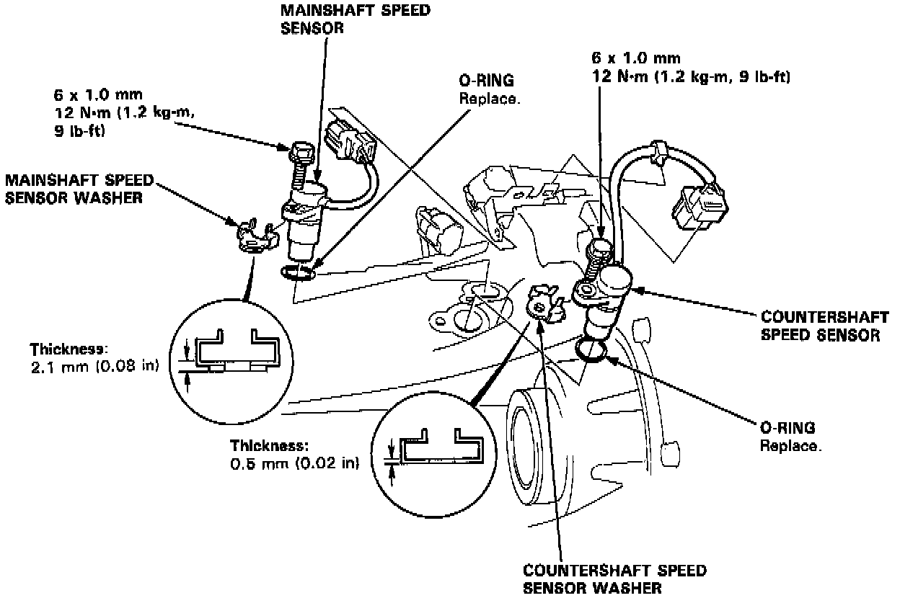

Transmission Speed Sensor: Service and Repair

1. Remove the 6 mm bolt from the transmission housing, and remove the mainshaft and countershaft speed sensors.
2. Replace the O-rings with new ones before reassembling the mainshaft and countershaft speed sensors.
3. Install mainshaft speed sensor washer on the mainshaft speed sensor and install countershaft speed sensor washer on the countershaft speed sensor.
NOTE: Make sure to install the appropriate washer on the appropriate speed sensor.